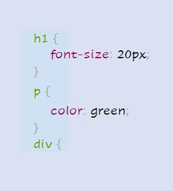
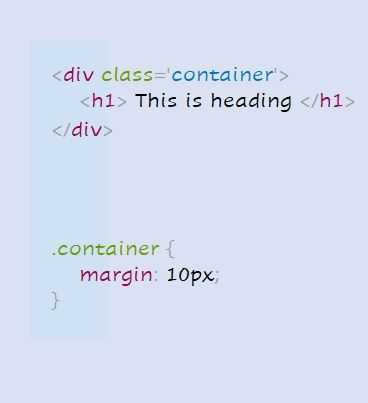

Selectores CSS
Selectores CSS Como comentamos anteriormente, CSS es un lenguaje de diseño que se utiliza para diseñar elementos HTML. Y para diseñar elementos, primero debe seleccionarlos. Ya ha visto un vistazo de cómo funciona esto, pero profundicemos un poco más en los selectores de CSS y veamos tres formas diferentes de seleccionar elementos HTML.1. Elemento La primera forma de seleccionar un elemento HTML es simplemente usando el nombre, que es lo que hicimos anteriormente. Vamos a ver cómo funciona:

El ejemplo anterior casi se explica por sí mismo. Estamos seleccionando diferentes elementos como (h1), (p), (div) y darles diferentes atributos de estilo. El font-size controla el tamaño del texto, color establece el color del texto y margin agrega espacio alrededor del elemento.
2. Clase
Otra forma de seleccionar elementos HTML es utilizando el atributo de clase. En HTML, podemos asignar diferentes clases a nuestros elementos. Cada elemento puede tener varias clases y cada clase también se puede aplicar a varios elementos. Veámoslo en acción:
En el código anterior, hemos asignado la clase de containeral
elemento div. En la hoja de estilo, seleccionamos nuestra clase usando .classNameformato y dándole un margen 10px.